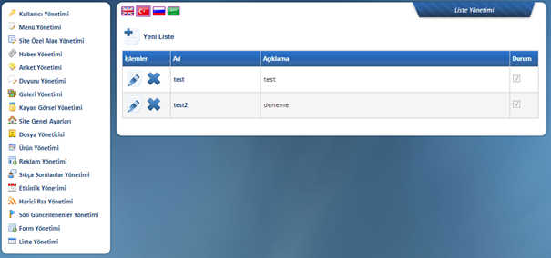
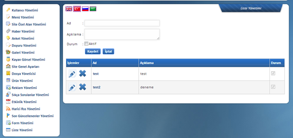
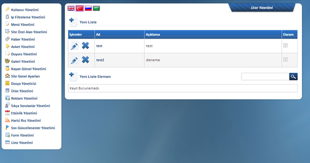
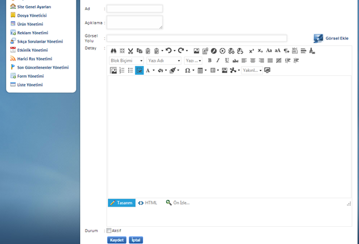

Web sitenizde liste olarak sunmanýz gereken her türlü içeriði bu bu alandan oluþturabilir ve düzenleyebilirsiniz. Listenin adýný (baþlýðýný) tanýmladýktan sonra içine kayýt eklemek çok kolay

Yeni Liste Butonuna Týkladýktan Sonra

Listenin adý, açýklamasý ve durumunun aktif olup olmayacaðý seçilip kaydedildikten sonra liste ana hatlarýyla oluþturulmuþ olur. Liste adý týklandýktan sonra aþaðýda görüldüðü üzere Yeni Liste Elemaný eklemek için alan açýlýr.

Yeni Liste Elemaný butonuna týkladýktan sonra

Ad: Listeye eklenecek olan liste
elemanýn adý yazýlýr ve çok uzun olmamasý önerilir.
Açýklama: Eklenecek olan liste elemanýna ait kýsa bir
özet yazýlýr.
Görsel
Yolu: Eklenecek liste elemanýna ait olan fotoðraf adresinin
eklenmesi gereken kýsýmdýr. Bu kýsýmda kolaylýk saðlanmasý amacýyla Görsel Ekle
ikonu eklenmiþ olup týklandýðýnda yönetim panelinde bulunan Dosya
Yöneticisindeki klasörleri küçük bir pencerede açacak ve fotoðrafý seçip çift
týklandýðýnýzda Görsel Yolu oluþturmuþ olacaktýr.
Detay:
Eklenecek olan liste elemanýnýn bilgilerinin yazýldýðý kýsýmdýr.